!.....PLACES.....!
1.VIZAG - the city of destiny
A dream holiday destination for the entire family, Visakhapatnam is more than just an Industrial city. Situated in the east coast of Andhra Pradesh, Visakhapatnam is named after Visakha, the Hindu God of valour and is more popularly known as Vizag.
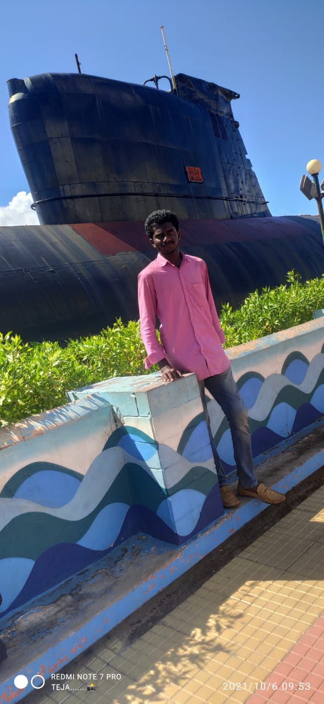
SUB MARINE

RK BEACH
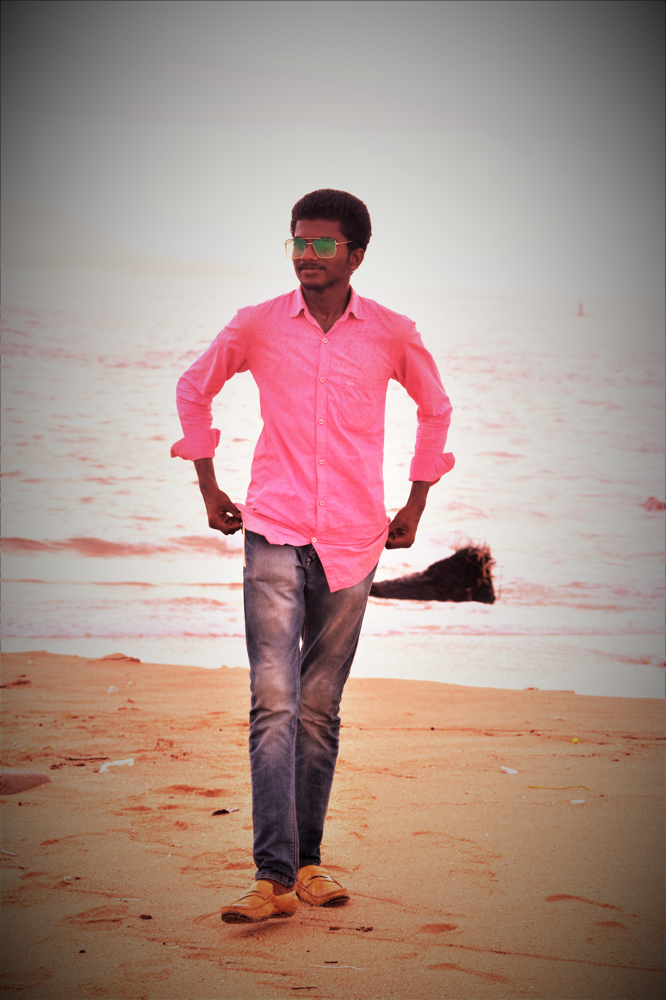
RUSHIKONDA
Apart from being known for the numerous industries, having the country’s oldest shipyards and being the headquarters of the Eastern Naval Command of the Indian Navy; Vizag is also known as a major tourist destination with hordes of tourists thronging this beautiful city of Andhra Pradesh every year.
HOW TO REACH :
2.ARAKU VALLEY
The journey to Araku valley by train is something that everyone should experience with tunnels, hill sides, streams, waterfalls making your journey truly mesmerising. The ride through the road is equally enchanting with sharp curves and beautiful sceneries along the way.
Located at an altitude of 911 m above sea level, Araku is a must visit destination for tourists visiting Vizag. Araku valley is mainly inhabited by tribals and the Tribal museum is one of the main attractions here. It houses tribal handicrafts and several artifacts depicting the lifestyle of tribal people. The tribal dance known as Dhimsa dance with tribals dressed in colorful attire is a must see for visitors coming to Araku.
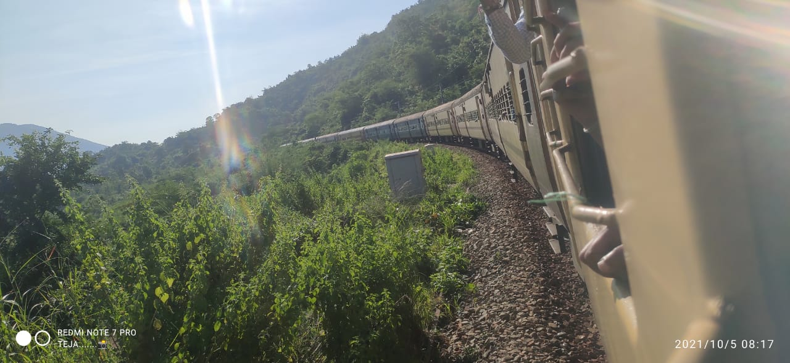
TRAIN VIEW
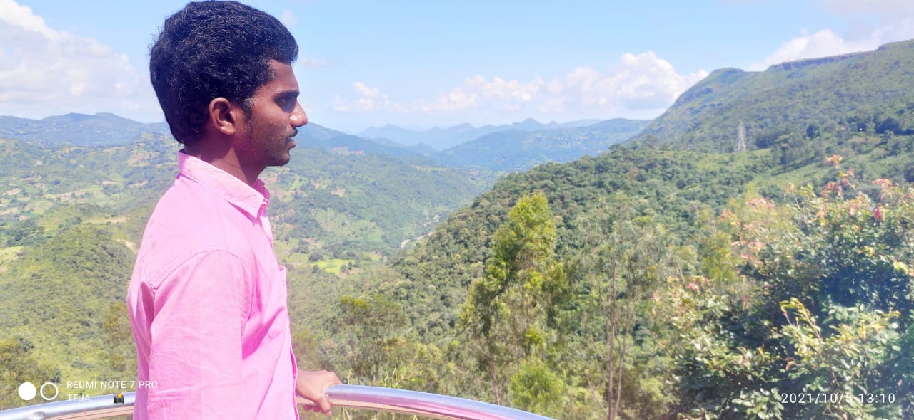
ARAKU VALLEY
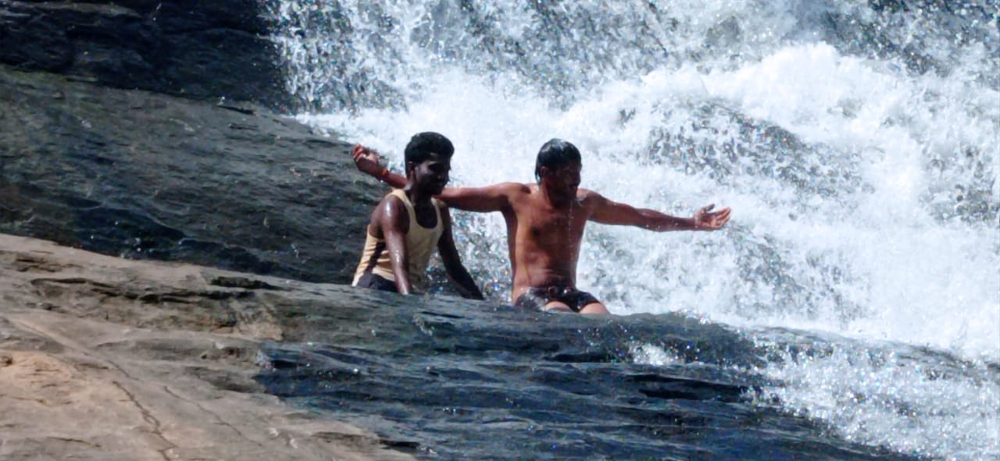
WATER FALLS
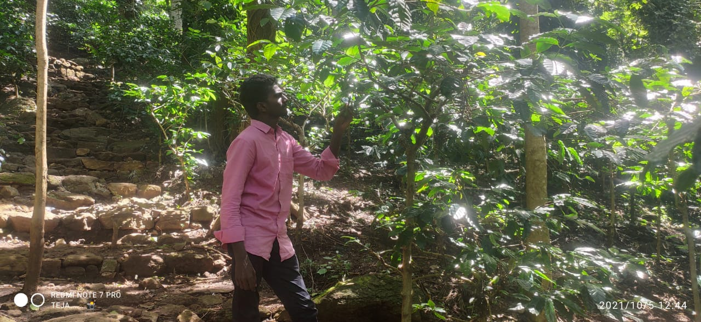
TEA PLANTATION
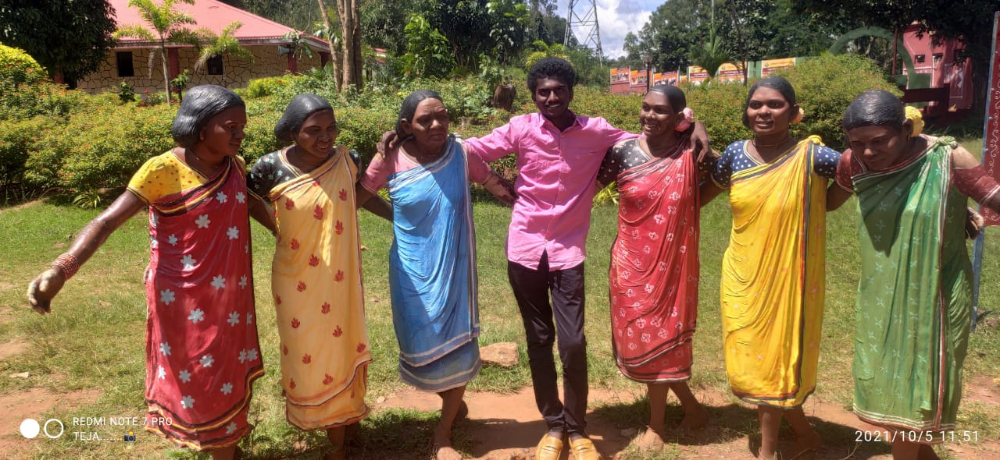
TRIBAL MUSEUM
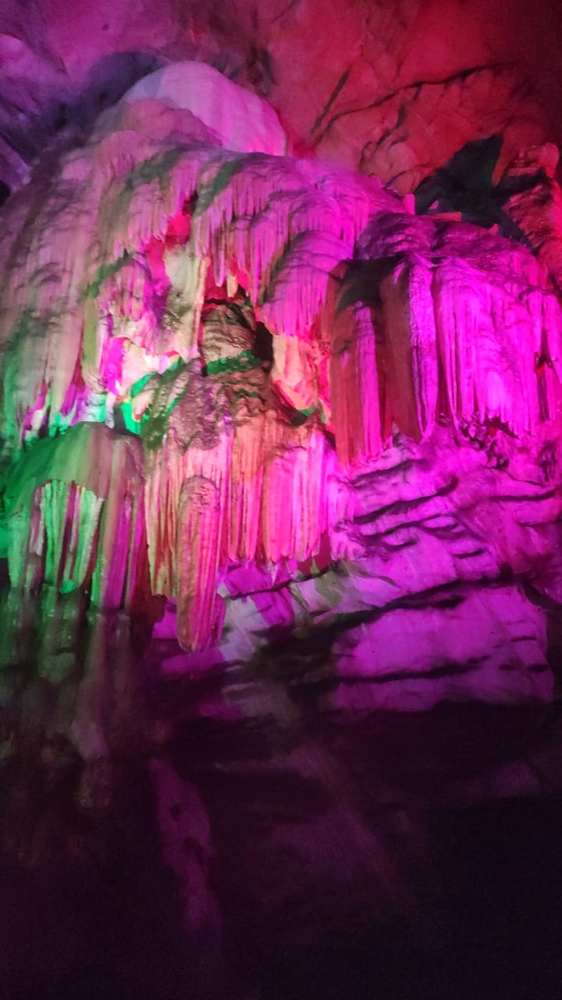
BORRA CAVES
HOW TO REACH :
3.ANNAVARAM
Situated atop the Ratnagiri Hills, enroute to Visakhapatnam, Annavaram is one of the most revered pilgrim centres in Andhra Pradesh. Annavaram is quite a picturesque destination with the Pampa River flowing languidly next to the hills. The multi-storeyed temple complex has several entrances. The riveting temple structure, painted in white is home to Veera Venkata Satya Narayana Swamy, a form of Lord Vishnu. Satya Narayana is offered prayers on occasions such as weddings, house warmings, etc. The main shrine is two-storeyed and houses a unique yantra (geometrical diagram used in the Tantric tradition to aid in meditation) based on Tripad Vibhuti Narayana Upanishad.
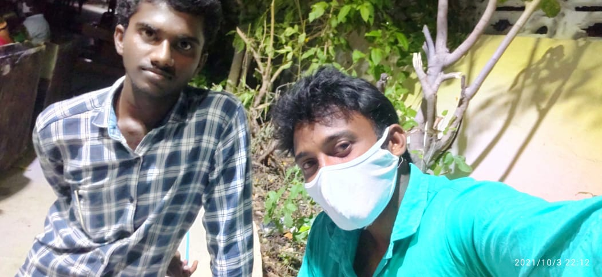
PREMISES
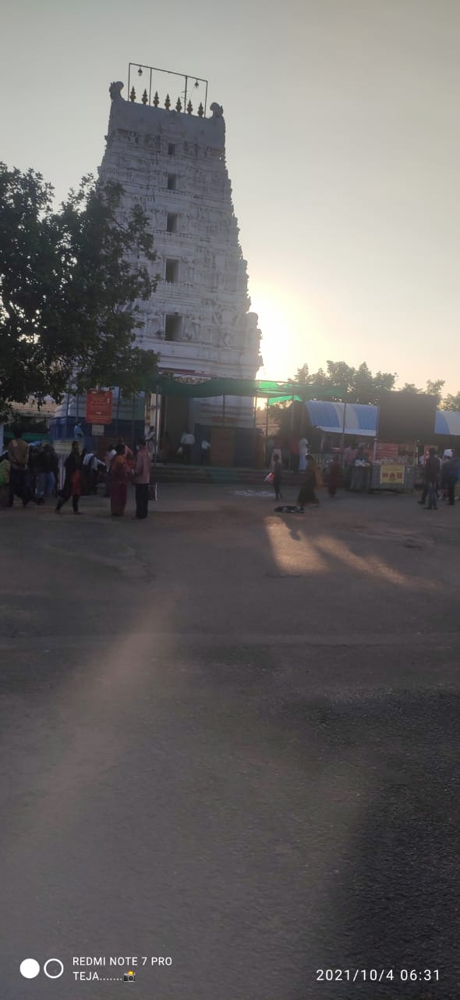
TEMPLE

TOP VIEW
HOW TO REACH :
4.BHADRACHALAM
The Sri Sita Ramachandraswamy temple is a Hindu temple dedicated to Rama, a prominent avatar of the god Vishnu. It is located on the banks of the Godavari River in the town of Bhadrachalam in east Telangana, India. Often simply referred to as Bhadrachalam or Bhadradri, the temple is considered one of the Divya Kshetrams of Godavari and is also revered as Dakshina Ayodhya.
Bhadrachalam is notable for its principal deity Rama. Gopanna used Bhadrachalam as a centre of the Bhajan tradition to spread awareness of the Vaishnavite tradition. The annual Brahmotsavam is the biggest festival celebrated in Bhadrachalam; the key event is the Sri Sitarama Thirukalyana Mahotsavam, or the marriage of Rama and Sita on the eve of Rama Navami. Other important festivals celebrated in Bhadrachalam are Vaikuntha Ekadashi, Vasanthotsavam, and Vijayadashami.
TEMPLE

BHADRACHALAM

GODAVARI
HOW TO REACH :
5.THIRUPATHI
Sri Venkateswara Swami Vaari Temple is a Hindu temple situated in the hill town of Tirumala at Tirupati in Chittoor district of Andhra Pradesh, India. The Temple is dedicated to Venkateswara, a form of Vishnu, who is believed to have appeared here to save mankind from trials and troubles of Kali Yuga. Hence the place has also got the name Kaliyuga Vaikuntha and the Lord here is referred to as Kaliyuga Prathyaksha Daivam. The temple is also known by other names like Tirumala Temple, Tirupati Temple, Tirupati Balaji Temple. Venkateswara is known by many other names: Balaji, Govinda, and Srinivasa.[3] The temple is run by body Tirumala Tirupati Devasthanams (TTD) which is under control of Andhra Pradesh Government. The head of TTD is appointed by Andhra Pradesh Government. The revenue from this shrine is used by Andhra Pradesh government.
Tirumala Hills are part of Seshachalam Hills range. The hills are 853 metres (2,799 ft) above sea level. The Hills comprises seven peaks, representing the seven heads of Adisesha. The temple lies on the seventh peak -Venkatadri, on the southern banks of Sri Swami Pushkarini, a holy water tank. Hence the temple is also referred to as "Temple of Seven Hills". Tirumala town covers about 10.33 sq mi (26.75 km2) in area.
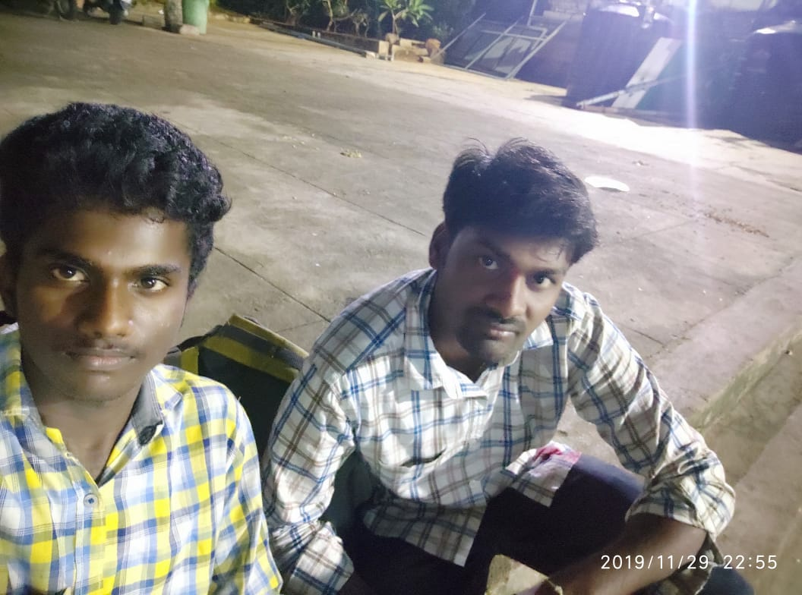
SELFIE
BALAJI

TEMPLE
H0W TO REACH :